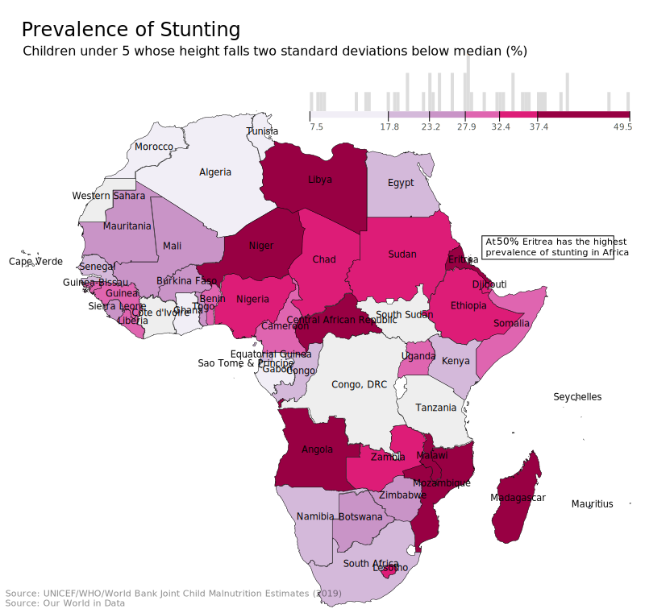

Let's start by exploring the prevalance of stunting in Africa. Poor nutrition and illness in childhood limit human growth. As a consequence, the average height of a population is strongly correlated with living standards in a population. The tallest country in the world is the Netherlands with an average male height over 6ft.
For another illustration of how resource availabilty and anatomy are linked: see here!
